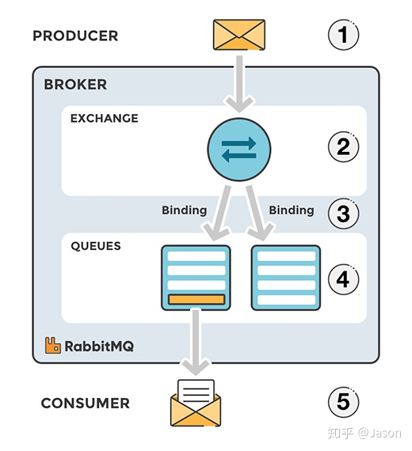

第十章-SpringBoot 与消息
JMS&AMQP 简介
消息服务中间件可以提升系统异步通信，扩展解耦能力
两个重要概念：
- 消息代理 message broker
- 目的地 destination
- 队列 queue ：
- 点对点消息通信 point-to-point
- 唯一的发送者和接收者
- 主体 topic
- 发布 publish/订阅 subscribe 消息通信
- 多接收者
| 协议 | JMS | AMQP |
|---|---|---|
| 英文 | Java Message Service Java | Advanced Message Queuing Protocol |
| 中文 | 消息服务 | 高级消息队列协议 |
| 实现 | ActiveMQ、HornetMQ | RabbitMQ |
| 定义 | JAVA API | 网络线级协议 |
| 跨语言 | 否 | 是 |
| 跨平台 | 否 | 是 |
| 消息模型 | peer-2-peer、Pub/Sub | 5 种 |
| 支持消息类型 | 多消息类型 | byte[] |
| 支持 | spring-jms | spring-rabbit |
| 发送消息 | @JmsTemplate | @RabbitTemplate |
| 监听消息 | @JmsListener | @RabbitListener |
| 开启支持 | @EnableJms | @EnableRabbit |
| 自动配置 | JmsAutoConfiguration | RabbitAutoConfiguration |
RabbitMQ 基本概念简介
https://www.rabbitmq.com/
RabbitMQ 是由 erlang 开发的 AMQP（Advanced Message Queuing Protocol） 实现
核心概念
- Message 消息（消息头+消息体）
- Publisher 消息发布者
- Exchange 交换器 4 种类型
- direct(默认)
- fanout
- topic
- headers
- Queue 消息队列
- Binding 绑定
- Connection 网络连接
- Channel 信道
- Consumer 消费者
- Virtual Host 虚拟主机 默认/
- Broker 消息队列服务器实体

RabbitMQ 运行机制
生产者把消息发布到 Exchange 上，
消息最终达到队列并被消费者接收，
而 Binding 决定交换器的消息应该发送到哪个队列

RabbitMQ 安装测试
安装启动 RabbitMQ
# 安装带有管理界面 docker pull rabbitmq:management # 客户端：5672 管理界面：15672 docker run -d -p 5672:5672 -p 15672:15672 --name myrabbitmq rabbitmq:management
管理界面
http://localhost:15672/
账号:guest
密码:guest
RabbitTemplate 发送接受消息&序列化机制
引入依赖
<dependency> <groupId>org.springframework.boot</groupId> <artifactId>spring-boot-starter-amqp</artifactId> </dependency>
自动配置类：RabbitAutoConfiguration
配置：RabbitProperties
给 Rabbit 发送和接收消息：RabbitTemplate
系统管理组件：AmqpAdmin
RabbitMQ 中新建：
queue: message exchange: exchange.message Routing key : message
自定义对象序列化规则
package com.example.demo.config; import org.springframework.amqp.support.converter.Jackson2JsonMessageConverter; import org.springframework.amqp.support.converter.MessageConverter; import org.springframework.context.annotation.Bean; import org.springframework.context.annotation.Configuration; @Configuration public class MyAMQPConfig { // 以json的方式序列化对象 @Bean public MessageConverter messageConverter(){ return new Jackson2JsonMessageConverter(); } }
点对点发送消息测试
package com.example.demo; import org.junit.jupiter.api.Test; import org.springframework.amqp.rabbit.core.RabbitTemplate; import org.springframework.beans.factory.annotation.Autowired; import org.springframework.boot.test.context.SpringBootTest; import java.util.HashMap; import java.util.Map; @SpringBootTest public class RabbitMQTest { @Autowired private RabbitTemplate rabbitTemplate; // 单播：发送数据 @Test public void testSendRabbitMQ() { Map<String, Object> map = new HashMap<>(); map.put("name", "Tom"); map.put("age", 23); rabbitTemplate.convertAndSend("exchange.message", "message", map); } // 单播：接收数据 @Test public void testReceiveRabbitMQ() { Object obj = rabbitTemplate.receiveAndConvert("message"); System.out.println(obj); // {name=Tom, age=23} } }
@RabbitListener&@EnableRabbit
开启 RabbitMQ
package com.example.demo; import org.springframework.amqp.rabbit.annotation.EnableRabbit; import org.springframework.boot.SpringApplication; import org.springframework.boot.autoconfigure.SpringBootApplication; @SpringBootApplication @EnableRabbit public class DemoApplication { public static void main(String[] args) { SpringApplication.run(DemoApplication.class, args); } }
监听队列数据
package com.example.demo.service; import org.springframework.amqp.core.Message; import org.springframework.amqp.rabbit.annotation.RabbitListener; import org.springframework.stereotype.Service; import java.util.Map; @Service public class MessageService { // 接收消息数据 @RabbitListener(queues={"message"}) public void listenMessage(Map<String, Object> map){ System.out.println("收到消息: " + map); } // 接收消息头和消息体 @RabbitListener(queues={"message"}) public void receiveMessage(Message message){ System.out.println("收到消息: " + message.getMessageProperties()); System.out.println("收到消息: " + message.getBody()); } }
AmqpAdmin 管理组件的使用
使用示例
package com.example.demo; import org.junit.jupiter.api.Test; import org.springframework.amqp.core.AmqpAdmin; import org.springframework.amqp.core.Binding; import org.springframework.amqp.core.DirectExchange; import org.springframework.amqp.core.Queue; import org.springframework.amqp.rabbit.core.RabbitTemplate; import org.springframework.beans.factory.annotation.Autowired; import org.springframework.boot.test.context.SpringBootTest; import java.util.HashMap; import java.util.Map; @SpringBootTest public class RabbitMQTest { @Autowired AmqpAdmin amqpAdmin; @Test public void createExchange(){ // 创建交换器 amqpAdmin.declareExchange(new DirectExchange("exchange.admin")); // 创建queque amqpAdmin.declareQueue(new Queue("queue.admin")); // 创建绑定规则 amqpAdmin.declareBinding(new Binding("queue.admin", Binding.DestinationType.QUEUE, "exchange.admin", "admin", null)); System.out.println("创建成功"); } }